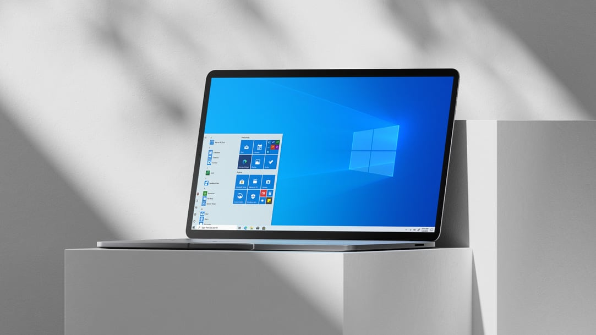

请访问原文链接：Windows 10 version 22H2 中文版、英文版下载 (2025 年 10 月更新) 查看最新版。原创作品，转载请保留出处。
生活本不易，原创更不易。还请友商高抬贵手，尊重彼此的劳动成果。谢谢🙏
作者主页：sysin.org

Windows 10 版本信息
Windows 10, version 22H2, all editions
- 发布日期: 2022/10/18
- 版本: Windows 10，版本 22H2
✅ Windows 10 版本信息
提示：Windows 10 的最终版本是版本 22H2，已于 2025 年 10 月 14 日终止服务。
从 Windows 10 版本 21H2 开始，Windows 10 版本的功能更新在每个日历年的下半年发布到正式发布频道。自发布之日起 18 个月或 30 个月内，将向其提供每月质量更新，具体取决于生命周期策略。
微软建议立即开始将每个正式发布频道版本定向部署到已选择进行早期采用的设备 (sysin)，并自行升级到完全部署。通过此操作，能够尽快获得对新功能、体验和集成安全性的访问权限。
有关服务时间线的信息，请参阅 Windows 生命周期常见问题解答。
备注：正式发布频道替换了之前的“半年度频道”，后者曾是 Windows 10 服务的主要和推荐频道。
✅ 对应于服务选项的 Windows 10 当前版本
所有的日期都按照 ISO 8601 格式列出：YYYY-MM-DD
- 服务频道
| 版本 | 服务选项 | 上市日期 | 最新版本 | 服务终止：家庭版、专业版、专业教育版和专业工作站版 | 服务终止：企业、教育、IoT 企业版和企业多会话 |
|---|---|---|---|---|---|
| 22H2 | 正式发布频道 | 2022-10-18 | 19045.5608 | 2025-10-14 | 2025-10-14 |
- 企业版和 IoT 企业版 LTSB/LTSC 版本
| 版本 | 服务选项 | 上市日期 | 最新版本 | 主要支持结束日期 | 外延支持结束日期 |
|---|---|---|---|---|---|
| 2021 (21H2) | 长期服务频道 (LTSC) | 2021-11-16 | 19044.5608 | 2027-01-12 | 2032-01-13 （仅限 IoT 企业版）① |
| 2019 (1809) | 长期服务频道 (LTSC) | 2018-11-13 | 17763.7009 | 服务终止 | 2029-01-09 |
| 2016 (1607) | 长期服务分支 (LTSB) | 2016-08-02 | 14393.7876 | 服务终止 | 2026-10-13 |
| 2015 (1507/RTM) | 长期服务分支 (LTSB) | 2015-07-29 | 10240.20947 | 服务终止 | 2025-10-14 |
备注：① Windows 10 企业版 LTSC 2021 版（版本 21H2）不具有扩展支持。服务将于 2027 年 1 月 12 日终止。2032 年 1 月 13 日之前，将仅向 Windows 10 IoT 企业版 LTSC 2021（版本 21H2）提供支持 (sysin)。
✅ Windows 10 发行历史记录
在 Windows 10 更新历史记录上了解有关 Windows 10 更新内容的更多信息。
Version 22H2 (OS build 19045)：
| 服务选项 | 上市日期 | 内部版本 | 知识库文章 |
|---|---|---|---|
| 正式发布频道 | 2022-10-18 | 19045.2130 |
- Version 21H2 (OS build 19044)
- Version 21H1 (OS build 19043) 服务终止
- Version 20H2 (OS build 19042) 服务终止
- Version 2004 (OS build 19041) 服务终止
- Version 1909 (OS build 18363) 服务终止
- Version 1903 (OS build 18362) 服务终止
- Version 1809 (OS build 17763)
- Version 1803 (OS build 17134) 服务终止
- Version 1709 (OS build 16299) 服务终止
- Version 1703 (OS build 15063) 服务终止
- Version 1607 (OS build 14393)
- Version 1511 (OS build 10586) 服务终止
- Version 1507 (RTM) (OS build 10240)
Windows 10 Enterprise LTSC 2021 下载地址
Windows 10 Enterprise LTSC 2021 简体中文版、繁体中文版、英文版
Windows 10 Enterprise LTSC 2021 简体中文版 x64
- 文件名：SW_DVD9_WIN_ENT_LTSC_2021_64BIT_ChnSimp_MLF_X22-84402.ISO
- 别名：zh-cn_windows_10_enterprise_ltsc_2021_x64_dvd_033b7312.iso
- SHA256SUM: C117C5DDBC51F315C739F9321D4907FA50090BA7B48E7E9A2D173D49EF2F73A3
Windows 10 Enterprise LTSC 2021 繁体中文版 x64
- 文件名：SW_DVD9_WIN_ENT_LTSC_2021_64BIT_ChnTrad_MLF_X22-84404.ISO
- 别名：zh-tw_windows_10_enterprise_ltsc_2021_x64_dvd_80dba877.iso
- SHA256SUM: FFDFEA3D3B77F041F019B9CC095E1197648BB689EC59582442460AD98E01347A
Windows 10 Enterprise LTSC 2021 English x64
- 文件名：SW_DVD9_WIN_ENT_LTSC_2021_64BIT_English_MLF_X22-84414.ISO
- 别名：en-us_windows_10_enterprise_ltsc_2021_x64_dvd_d289cf96.iso
- SHA256SUM: C90A6DF8997BF49E56B9673982F3E80745058723A707AEF8F22998AE6479597D
Windows 10 IoT Enterprise LTSC 2021 English x64
- 文件名：en-us_windows_10_iot_enterprise_ltsc_2021_x64_dvd_257ad90f.iso
- SHA256SUM: a0334f31ea7a3e6932b9ad7206608248f0bd40698bfb8fc65f14fc5e4976c160
Windows 10 IoT Enterprise LTSC 2021 English arm64
- 文件名：en-us_windows_10_iot_enterprise_ltsc_2021_arm64_dvd_e8d4fc46.iso
- SHA256SUM: ce105a9a39fa21a38d11dc7249eaf209b9a55279963901da2759b7093bcfd8c7
Windows 10 22H2 下载地址
本文仅提供官方安装介质的获取方式。评估版可免费试用 30 天，仅供测试、学习和研究用途，请勿用于生产环境。
语言：简体中文、繁體中文、English
Windows 10 Enterprise (教育版、企业版、专业版、专业教育版、专业工作站版) Arm64, x64 (released Oct 2022)：
百度网盘链接：https://pan.baidu.com/s/1flnvy6jhyj9HaBwgAfxNMA?pwd=40zg
Windows 10, version 22H2 (released Oct 2022) Arm64 Chinese Simplified 5074 MB ISO
SHA256：2B52E357307E79E33733C9563B1ED325458ACE163E8FD0106EA11001E4BE430D
Windows 10, version 22H2 (released Oct 2022) x64 Chinese Simplified 5677 MB ISO
SHA256：44F6E097C3244BC99DB4D9C9592C04E1F2EF31898E68EEF526106B97282D30FB
Windows 10, version 22H2 (released Oct 2022) Arm64 Chinese Traditional 5062 MB ISO
SHA256：6343E3E52529D2F51A9376B270C1840313FFBF7C8FB603C42C95D2904AC42A5B
Windows 10, version 22H2 (released Oct 2022) x64 Chinese Traditional 5668 MB ISO
SHA256：91C5B86E6FF0D0D9F3C29E26EB60C10CA379638AE3082C456154D8AB23334414
Windows 10, version 22H2 (released Oct 2022) Arm64 English 4838 MB ISO
SHA256：F074B6577E8D078A23860153A9E35875F24CBC5DFFBFB77BA858251C50DC0607
Windows 10, version 22H2 (released Oct 2022) x64 English 5691 MB ISO
SHA256：18A84E0DA1043D7C1D3CF46EE127E8F637D425AD57E115EE862AF203FA4932A8
Windows 10 MUI 多国语言包：
访问此网站可获取有关在 Windows 10 映像中添加语言的更多信息
Windows 10, version 2004 or newer Language Packs (released May 2020) 32/64 bit/ARM64
5675 MB ISO
SHA256SUM: 201269A05A09DBA91D47923C733D43F38F38EBF33DE2FD0750887D2763886743
百度网盘链接：https://pan.baidu.com/s/1S-vqkvdMvdf7kZ7WVEKi1A?pwd=miet
历史版本已清理。
Windows 10 Enterprise (教育版、企业版、专业版、专业教育版、专业工作站版) Arm64, x64 (updated Aug 2025)：
x64 百度网盘链接：https://pan.baidu.com/s/1m4fqnano_OCKEh8M2dF-Nw?pwd=xzvu
- en-us_windows_10_business_editions_version_22h2_updated_aug_2025_x64_dvd_a34ca02ds.iso
- zh-cn_windows_10_business_editions_version_22h2_updated_aug_2025_x64_dvd_b6baaad4s.iso
- zh-tw_windows_10_business_editions_version_22h2_updated_aug_2025_x64_dvd_06e4045as.iso
Arm64 百度网盘链接：https://pan.baidu.com/s/1Q5TTzm8l3wMdYKbEr86_Zw?pwd=8e8a
- SW_DVD9_Win_Pro_10_22H2.34_Arm64_ChnSimp_Pro_Ent_EDU_N_MLF_X24-09936S.ISO
- SW_DVD9_Win_Pro_10_22H2.34_Arm64_ChnTrad_Pro_Ent_EDU_N_MLF_X24-09937S.ISO
- SW_DVD9_Win_Pro_10_22H2.34_Arm64_English_Pro_Ent_EDU_N_MLF_X24-09943S.ISO
Windows 10 Enterprise (教育版、企业版、专业版、专业教育版、专业工作站版) Arm64, x64 (updated Sep 2025)：
x64 百度网盘链接：https://pan.baidu.com/s/1WAsC5QrTkdZq5UfqKb9XkQ?pwd=s9hk
- en-us_windows_10_business_editions_version_22h2_updated_sep_2025_x64_dvd_02d278dds.iso
- zh-cn_windows_10_business_editions_version_22h2_updated_sep_2025_x64_dvd_86874d1cs.iso
- zh-tw_windows_10_business_editions_version_22h2_updated_sep_2025_x64_dvd_ba90af64s.iso
Arm64 百度网盘链接：https://pan.baidu.com/s/19fp4Kxy9SY_WtfooDtdElA?pwd=bn8n
- SW_DVD9_Win_Pro_10_22H2.35_Arm64_ChnSimp_Pro_Ent_EDU_N_MLF_X24-15342S.ISO
- SW_DVD9_Win_Pro_10_22H2.35_Arm64_ChnTrad_Pro_Ent_EDU_N_MLF_X24-15343S.ISO
- SW_DVD9_Win_Pro_10_22H2.35_Arm64_English_Pro_Ent_EDU_N_MLF_X24-15349S.ISO
Windows 10 Enterprise (教育版、企业版、专业版、专业教育版、专业工作站版) Arm64, x64 (updated Oct 2025)：
VSS Version x86/x64 百度网盘链接：https://pan.baidu.com/s/1KWD6-30NBWFcMTo36vRtMA?pwd=p5jf
- en-us_windows_10_business_editions_version_22h2_updated_oct_2025_x64_dvd_d2eef4b0.iso
- en-us_windows_10_business_editions_version_22h2_updated_oct_2025_x86_dvd_d9ac9936.iso
- en-us_windows_10_consumer_editions_version_22h2_updated_oct_2025_x64_dvd_38efd00d.iso
- en-us_windows_10_consumer_editions_version_22h2_updated_oct_2025_x86_dvd_38efd00d.iso
- zh-cn_windows_10_business_editions_version_22h2_updated_oct_2025_x64_dvd_d4e92df7.iso
- zh-cn_windows_10_business_editions_version_22h2_updated_oct_2025_x86_dvd_80ad3e99.iso
- zh-cn_windows_10_consumer_editions_version_22h2_updated_oct_2025_x64_dvd_38efd00d.iso
- zh-cn_windows_10_consumer_editions_version_22h2_updated_oct_2025_x86_dvd_38efd00d.iso
- zh-tw_windows_10_business_editions_version_22h2_updated_oct_2025_x64_dvd_bb0b9077.iso
- zh-tw_windows_10_business_editions_version_22h2_updated_oct_2025_x86_dvd_e33a20c3.iso
- zh-tw_windows_10_consumer_editions_version_22h2_updated_oct_2025_x64_dvd_38efd00d.iso
- zh-tw_windows_10_consumer_editions_version_22h2_updated_oct_2025_x86_dvd_38efd00d.iso
MAC Version x86/x64 百度网盘链接：<同上，渠道差异实际同 BE>
- SW_DVD9_Win_Pro_10_22H2.36_32BIT_ChnSimp_Pro_Ent_EDU_N_MLF_X24-17081.ISO
- SW_DVD9_Win_Pro_10_22H2.36_32BIT_ChnTrad_Pro_Ent_EDU_N_MLF_X24-17083.ISO
- SW_DVD9_Win_Pro_10_22H2.36_32BIT_English_Pro_Ent_EDU_N_MLF_X24-17095.ISO
- SW_DVD9_Win_Pro_10_22H2.36_64BIT_ChnSimp_Pro_Ent_EDU_N_MLF_X24-17154.ISO
- SW_DVD9_Win_Pro_10_22H2.36_64BIT_ChnTrad_Pro_Ent_EDU_N_MLF_X24-17155.ISO
- SW_DVD9_Win_Pro_10_22H2.36_64BIT_English_Pro_Ent_EDU_N_MLF_X24-17161.ISO
MAC Version Arm64 百度网盘链接：https://pan.baidu.com/s/1e3SmmutG7y2E80hCZiM4ww?pwd=gpw3
- SW_DVD9_Win_Pro_10_22H2.36_Arm64_ChnSimp_Pro_Ent_EDU_N_MLF_X24-17192.ISO
- SW_DVD9_Win_Pro_10_22H2.36_Arm64_ChnTrad_Pro_Ent_EDU_N_MLF_X24-17193.ISO
- SW_DVD9_Win_Pro_10_22H2.36_Arm64_English_Pro_Ent_EDU_N_MLF_X24-17199.ISO
本文仅提供官方安装介质的获取方式。评估版可免费试用 30 天，仅供测试、学习和研究用途，请勿用于生产环境。
虚机模板下载：
- Windows Server 2016 OVF (2026 年 8 月更新) - VMware 虚拟机模板
- Windows Server 2019 OVF (2026 年 8 月更新) - VMware 虚拟机模板
- Windows Server 2022 OVF (2026 年 8 月更新) - VMware 虚拟机模板
更多：Windows 下载汇总

文章用于推荐和分享优秀的软件产品及其相关技术，所有软件提供免费版或试用版。内容若侵犯了您的版权，请联系作者删除。如果您喜欢这篇文章，或者觉得它对您有所帮助，亦或发现有不当之处；欢迎发表评论，也欢迎分享这个网站，或者赞赏一下，谢谢！提示：捐赠或赞赏属于自愿赠予行为，提交后即表示您对作者的支持与认可。为避免误操作，请在确认前仔细检查金额，支付完成后将无法撤销或退还。
 支付宝赞赏
支付宝赞赏  微信赞赏
微信赞赏赞赏一下
敬请注册！点击 “登录” - “用户注册”（已知不支持 21.cn/189.cn 邮箱）。 请勿使用联合登录（已关闭）。